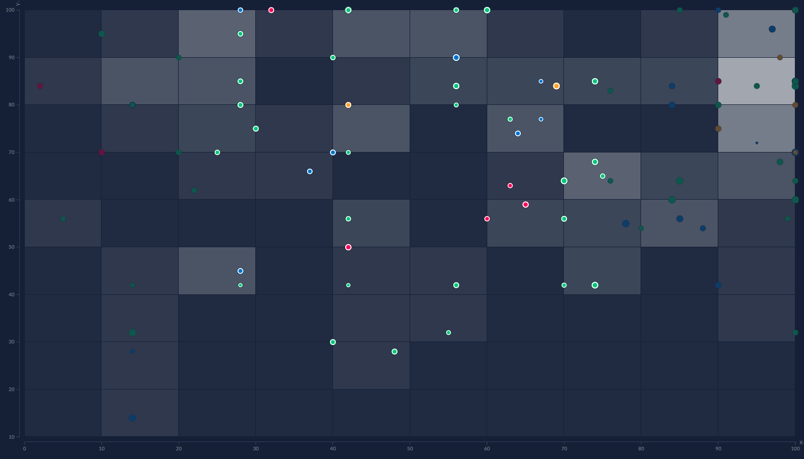

Talent Lab:Superheroes
Talent Lab is data visualization software made by Data Laboratories Limited. The software allows a human resource professional to easily make data visualization to analyze the workforce at their comapny. Talent Lab decided to demostrate their software by putting in data for superheroes. I will talk about the different features of this data visualization and give my own personal critique of it.
Website: Visualization
Talent Lab: SuperheroesThe image above is what you see when you first enter into the visualization. Initial the data is show as a table showing the different attributes of a particular superhero such as:Name, Real Name,Publisher,Creater(s),Gender,Character Type,Apperance,Intelligence, Strength,Speed,Durability, Power,Combant,Good or Bad,and Description. the visualization.
The type of person would use this type of visualization would be comic book fan who would want look up information on their favorite superhero and see how they compared to other superheroes. It would also be a great way to resolve discussions about which superhero is able beat who. It can answer such debates as is batman able to beat superman or which superhero is the smartest out of them all.This visualization provides a wealth of information to make a judge about superheroes abilities compared to other ones.In the following section I will break down the different controls that are in the viusalization.
Controls

The image shown above is the menu bar that you will see when you use the visualization.The menu bar gives you couple of different options to repersent the data.For the visualization you can represent the data as table,bar chart,pie chart,cluster plot, or scatter plot. The other options that are listed are not available for this visualization. On the menu bar you can also search for a particular superhero and will pin point it location in the visualization. Then it will also pull down a profile about the superhero with a picture and their attributes of that hero.
For each type of chart or plot there are side menu bars which allows you to filter the data base upon what you are looking for. The side menu for a bar chart provide you couple of ways to display the data such as by ordering(sizing),Ranking,Color, and filtering by a superheroes attributes.
DATA: What is the Data
The data for visualization is the attributes of different superheroes from the DC and Marvel universe. The attributes that are shown is the number of appearances, intelligence, strength, speed, durability, power, combat, good or bad, and a description of the superhero. It also have information there superheroes real name, publisher, creator, gender, and character type. The meat of the information that is provided is their attributes. It what is used to manipulate the graphs in the different views.
DATA: Where did the Data come from
The data that they used for this application came from the superheroes database and from the web. There no information how they collected the data from this site or the web.
Critque:The Good about the Visualization
Talent-lab’s superheroes visualization gives you plenty of different way to visualize data to make comparison about different superheroes. I like that they give you the options to look at data as a table, bar chart, cluster chart, scatter chart, or as talent target. The choices in terms of how you can look at data was a good choice that they made in making the visualization.
The menu that they made for the application make it intuitive to navigate between the different options for the visualization.First time users can easily click on the menu options that they want to use and select the data they want to look at. The menu is also responsive and instantly shows you the data that you want to see.
They also added in a search bar which allows you to type in name of a superheroes and it will actually show you where they are located within the visualization. You can just type in a heroes name and see how they are compared to other heroes. Then it will also pull up the profile for you to see that superheroes information. In the search bar you also enter more than one name to make a comparison against other superheroes. It will highlight their information and where they are compared to the others that where selected.
For each chart in the visualization the authors give you different ways to manipulate the data. With the tools they give a user, they can change the visualization base upon what attribute they want know about from the group of superheores.
I like with the bar charts that they gave you a couple of different options to compare superheroes. They gave the option to use two attributes as way to order the superheroes on the chart. A user can also rank the superheroes base upon gender,character type, good or bad, or apperance.
With the cluster chart I like that you can cluster superhero data base upon character type, gender, or Good or Bad. It will also allow you to cluster as a whole or individual and look at how many would fit into certain attributes such as combat, Intelligence, speed, or many other attributes.
Talent Target chart gave the best possible view of the data since it allows you add multiple targets to see how closely a hero would fit into certain category. This provide wealth of information once add the other fields such as sector by, color by, and size by. You can easy compare each individual superhero to each other. This is the best chart in the entire visualization compared to the other ones.
The color choices that made for visualization makes it very easy to see information about a superhero. They allow you filter color base upon severally different factors such as character Type, Gender, and Good or Bad. The color choices that made make easy to see how that information relates to the rest of the visualization.
Critque: The Bad about the visualization
There are couple of things that could be improved in this visualization that would make it better. Overall visualization does a good job at seeing how other superheroes relate to each other. It allows you make comparison of different hero’s base on their attributes.
One of things that could of have been better in visualization is if they allowed you to select heroes directly from the graph. It is good that you could search for multiply heroes at once but it would of been a good features to be able select them directly from the visualization.
When you do search superheroes name, it suppose show a label with the heroes name next to it location on the graph. On some graph it does show the correct location but on other ones it way off or close but not directly on heroes location.
There where couple of graphs in which it was hard to see the information because it was either too small or colors sort of blended in together. If the information was a tad bit bigger it would make it easier to read the information on the screen. Another problem I would point out too is that colors would not work with someone who is color blind that wanted to check the visualization. In particular there is one graph that felt information could be bigger and that would be the scatter plot graph.
Conclusion
The visualization that is provided by talent-lab is both fun and interesting. It provide plenty of different ways to look at superhero data to get better view of their attributes compared to other superheroes. This visualization is easy to use for someone who has never used the site before. There are only couple of things that could be made better in the visualizaiton but it only minor things that don't take away from using. It would been nice have some of the data appear tad bigger on the screen or way to select superheroes directly from the visualization to track through the rest of the charts and graphs. Otherwise, it is very clean concise visualization that anyone could use to learn more about their favorite superheroes and make comparisons on other ones.